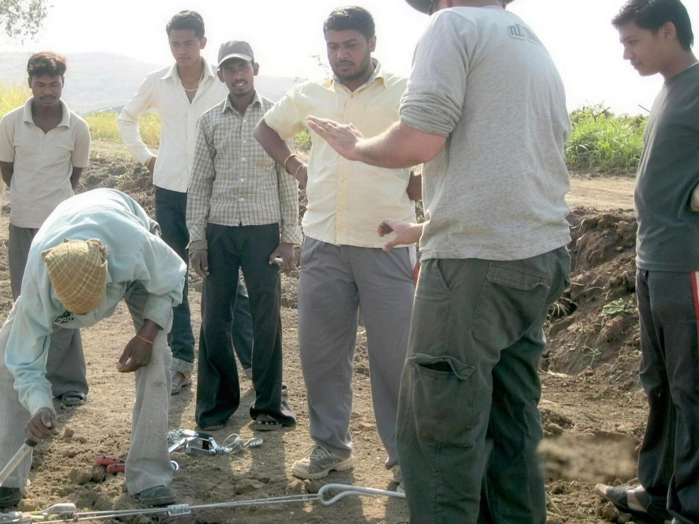

A family company that builds for growers
We initiate, design and carry out agricultural projects, from the project's infrastructure to every kind of agricultural structure. More than 20 years of work. Our office is in Kfar Masaryk, in the north of Israel.
Setting up on a MIFTAH project site. MIFTAH archive.
The owners
Merav Eyal Hasfel
Co-CEO and owner
BA in business administration. Runs the company day to day, its finance, and marketing and sales. Your first contact for a new project.
Yiftach Hasfel
Co-CEO and owner
Practical engineer in construction, trained at the Technion. Leads needs mapping on site, engineering design, development, quality control, production supervision and execution. He ran a complex project in Belarus that kept to schedule with local manufacturing, shipping and local crews.
How we work
Our own plant makes the poles, nets, cables and fittings, and checks them before they ship. Our installation crews are trained for work at height and run several projects in parallel. The team brings together Israelis and agronomy students from abroad who come to study in Israel.
Company details
| Name | MIFTAH Projects (מיפתח פרויקטים) |
|---|---|
| Office | Kfar Masaryk, Israel |
| Phone | +972 4 985 4404 |
| Management | Merav Eyal Hasfel and Yiftach Hasfel, co-CEOs |

Talk to Merav or Yiftach.
Send the location, the crop and the area, and we'll call to arrange a first conversation.